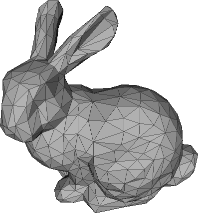

WebGL originated from experiments on the Canvas 3D American developer of Serbian
origin Vladimir Vukicevic from Mozilla in 2006. Then developers of browsers
Opera and Mozilla began to create their own WebGL implementations. And later a working
group was organized with the participation of the largest developers of browsers Apple,
Google, Mozilla, Opera to work on the specification of technology. And on March 3, 2011,
the WebGL 1.0 specification was introduced.
What is the WebGL?
WebGL (Web-based Graphics Library) is a technology based on OpenGL ES 2.0 and is designed for graphic design and
interactive display of 2D and 3D graphics in web browsers. Any plug-ins
or libraries are not required to work with this technology. All WebGL-based Web application
work is based on the JavaScript code, and some code-shader elements can be executed directly
on graphics cards on video cards, allowing developers to gain access to additional computer
resources and increase performance. Developers can use HTML / CSS / JavaScript standard
web technologies to create applications, and also use accelerated graphics.
WebGL runs on the GPU on your computer. As such you need to provide the code that runs on that GPU.
You provide that code in the form of pairs of functions. Those 2 functions are called a vertex shader
and a fragment shader and they are each written in a very strictly typed C/C++ like language called GLSL.
(GL Shader Language). Paired together they are called a program.
Triangles can never be non-planar; anything with more than 3 points
can be non-planar and thus un-renderable unless converted to triangles.
For example: A square is two triangles that are on the same plane, if
all the points that make up the square are co-planar. It takes a lot of
calculations to make sure all the points are co-planar, thus all polygons
that are greater than 3 points are pre-calculated by decimating them into
triangles and tested to make sure all the points are co-planar once, instead
of on every frame that gets rendered

Shaders
WebGL runs on the GPU on your computer. As such you need to provide the code
that runs on that GPU. You provide that code in the form of pairs of functions.
Those 2 functions are called a vertex shader and a fragment shader and they are
each written in a very strictly typed C/C++ like language called GLSL. (GL Shader Language).
Paired together they are called a program.
Profit
Cross-browser compatibility and lack of binding to a certain platform.
Windows, MacOS, Linux - all this is not important, the main thing is that
your browser supports WebGL.
Using JavaScript, which is fairly common.
Since WebGL uses a graphics processor on a video card (GPU) for graphics rendering,
this technology is characterized by high productivity, which is comparable to the
performance of native applications.